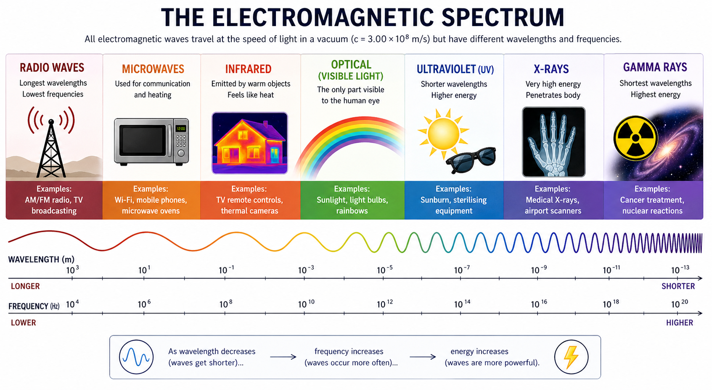
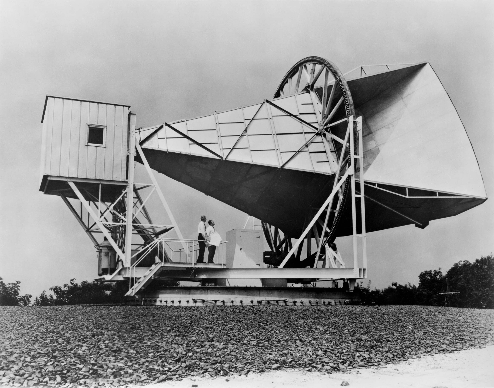
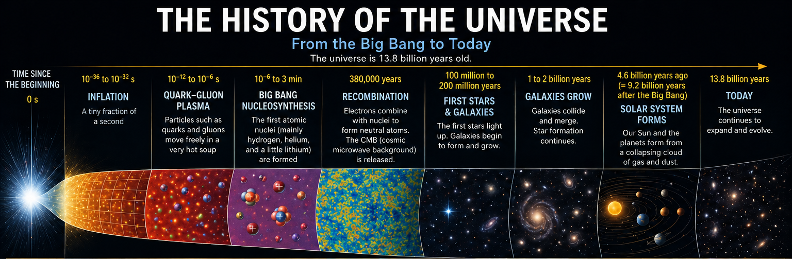
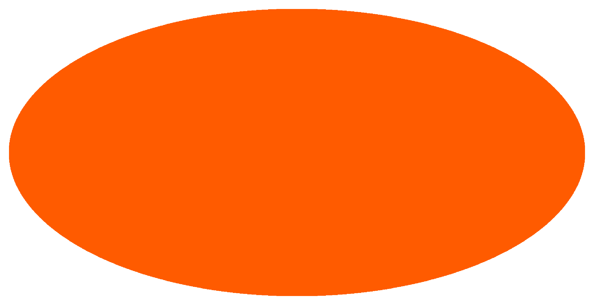
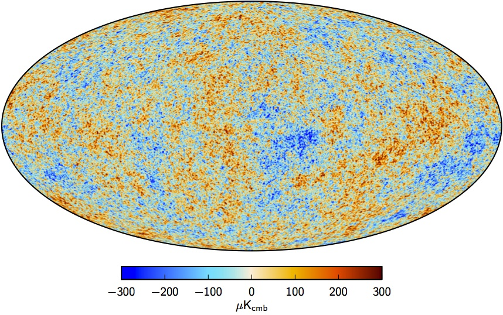
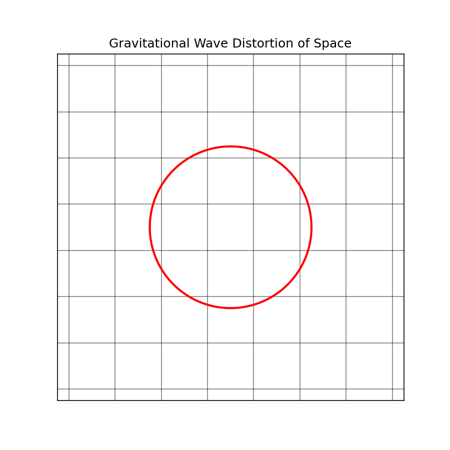
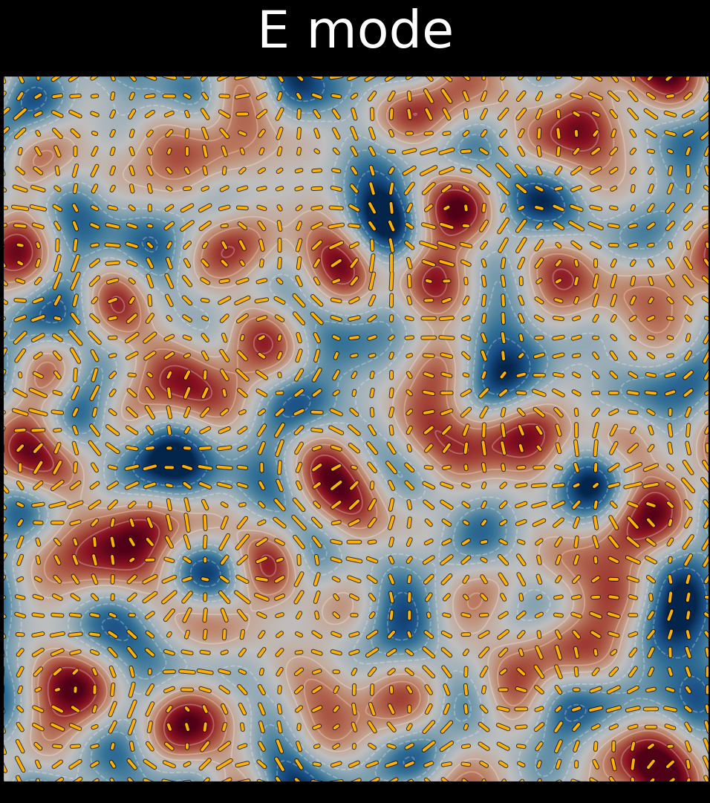
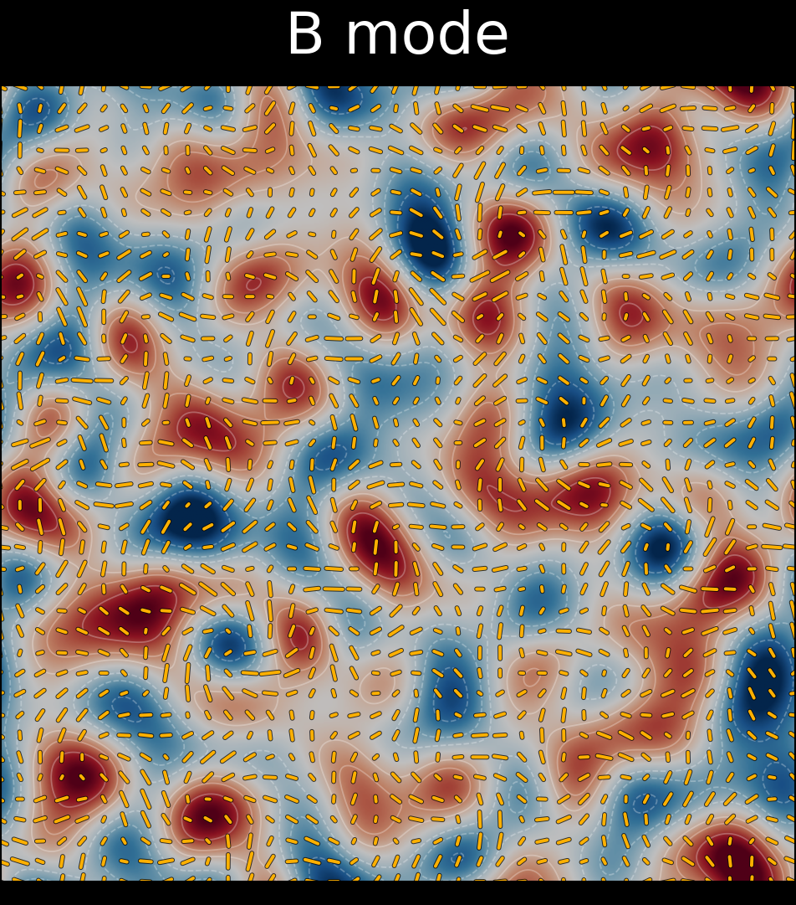

Light from the early Universe
What is the cosmic microwave background?
The cosmic microwave background, or CMB, is a bath of microwave radiation that fills the entire Universe.
It reaches us from every direction in the sky, making it one of the most important clues we have about what the Universe was like long before stars, galaxies, and planets existed.
Step one
What does “microwave” mean here?
Visible light is only a small part of the full electromagnetic spectrum. There are many other kinds of light, including radio waves, infrared, ultraviolet, X-rays, and microwaves.
Microwave radiation is familiar from everyday technology, from microwave ovens to wireless communications. The CMB is light in this microwave part of the spectrum.


Step two
What exactly is the CMB?
The CMB is the faint microwave glow that fills the Universe and can be seen in every direction. It was discovered in 1964 by Arno Penzias and Robert Wilson while they were developing technology for satellite communications.
What they found turned out to be far more important than a source of noise in an antenna. It was a signal from the early Universe itself.
Step three
Where did it come from?
The early Universe began in a hot, dense state and then expanded and cooled. After about 380,000 years, it had cooled enough for atoms to form. Before that moment, light was constantly scattered by charged particles and could not travel freely.
Once atoms formed, that light was finally released and began streaming across space. The CMB is that ancient light, still traveling through the Universe almost 13.8 billion years later.

What we measure
Why does the CMB look almost the same everywhere?
The CMB is extremely uniform. Its dominant signal is the monopole: a nearly perfect all-sky temperature of about 2.72 K.
But that is not the whole story. Tiny fluctuations are imprinted on top of that near-uniform glow, and these anisotropies are only at the level of roughly 100 microkelvin. Those small patterns carry information about conditions in the very early Universe and the seeds of later cosmic structure.
One of the goals of the Simons Observatory is to produce even better measurements of these anisotropies and search for new signals hidden within them.


Feeling the squeeze
A wobbling sheet
Imagine drawing a neat grid on a rubber sheet, then stretching it in one direction while squeezing it in the other. A circle drawn on the sheet would briefly become an oval, then later an oval the other way around.
That is the basic idea of a gravitational wave. Matter is not flowing across space like water on a surface. Instead, the distances within space are changing as the wave passes.

A ripple in spacetime
The Universe's earliest tremor
In the very early Universe, space may have expanded extremely rapidly during a period called inflation. Many inflationary models predict that this would have produced tiny ripples in spacetime known as primordial gravitational waves.
Those waves would be far too faint to detect directly today, but they could have left a fossil imprint in the cosmic microwave background. Ordinary density ripples mainly drove sound waves in the hot plasma. Gravitational waves would instead have stretched and squeezed spacetime itself, leaving a different pattern in the CMB.
That possible signal is extraordinarily small. The video compares the scale of the CMB's average temperature, its tiny temperature fluctuations, the larger polarization signal produced by density ripples, and the even fainter signal that primordial gravitational waves might have created.
The polarization of light
The basics of light
Light is an electromagnetic wave. As it travels forward, its electric field oscillates sideways, perpendicular to the direction of motion.
The orientation of that oscillation is called polarization. In the CMB, polarization gives us another way to trace what was happening in the early Universe when this light last scattered.
E-modes
The orderly pattern
The two polarization signals mean there are two polarization patterns we can see in the CMB: E-modes and B-modes.
E-modes are the simpler polarization pattern. Imagine tiny arrows scattered across the sky. In an E-mode pattern, those arrows tend to point toward a spot, away from a spot, or around it in neat, symmetric rings.
E-modes do not have a sense of handedness, so a mirror image looks essentially the same. Most of the CMB polarization is in E-modes, and they are produced naturally by ordinary density ripples in the early Universe.

B-modes
The curly pattern
B-modes are the curl-like polarization pattern. They are much harder to produce than E-modes, which is why cosmologists care so much about them.
Some B-modes are generated when the gravity of galaxies and dark matter distorts E-modes as the CMB travels toward us. A primordial B-mode signal, however, would be especially exciting because it could be evidence of gravitational waves from the Universe's earliest moments.
